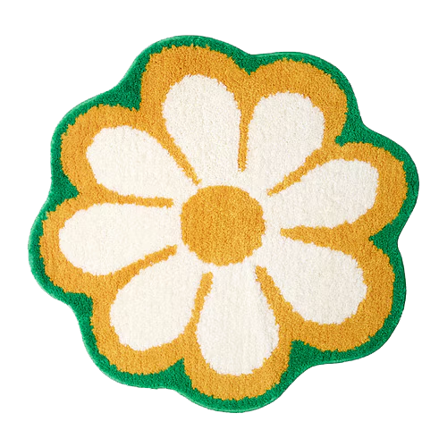
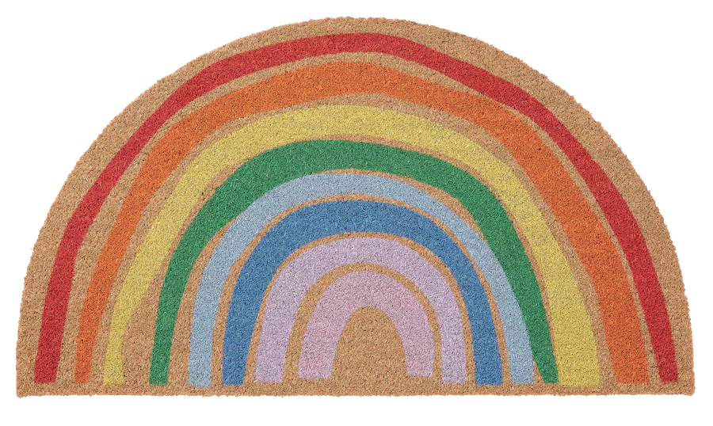
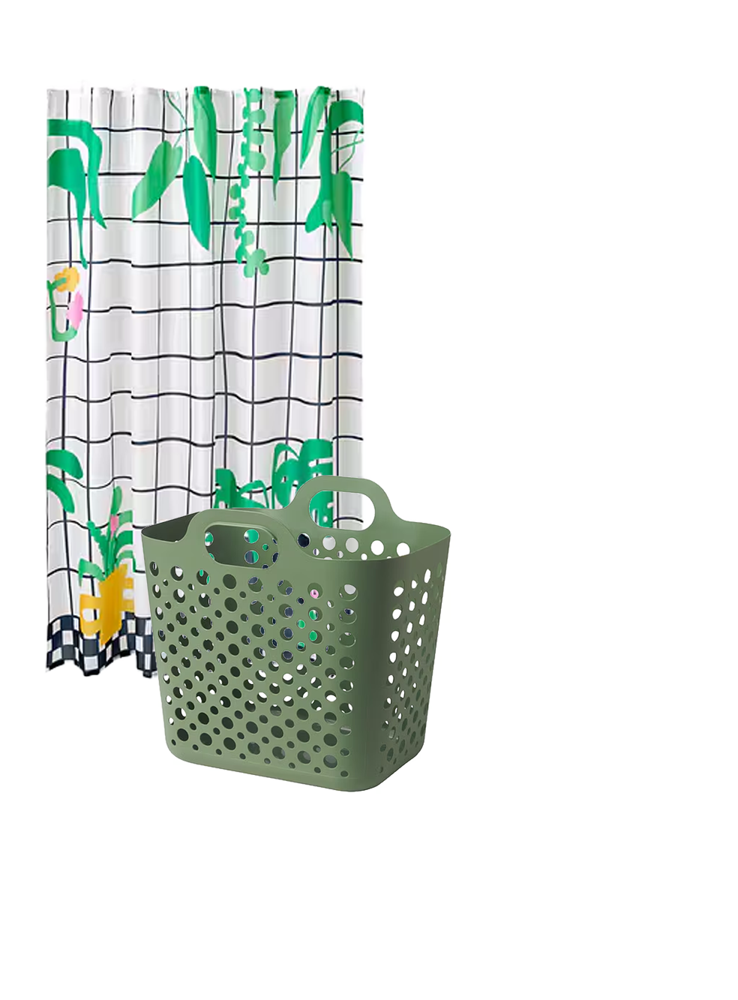
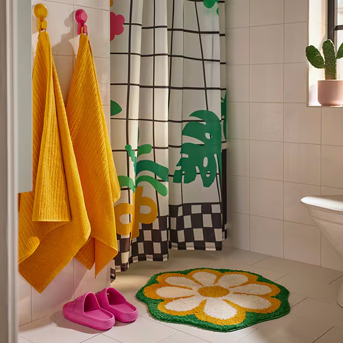
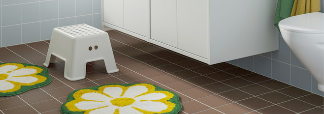

KÄRRKNIPPROT
  Made for sharing
bath mat, floral pattern/multicolor, 26 "
This thick flower-shaped bath mat gives your feet a warm welcome when you step into the bathroom. Easy to match with bath towels and shower curtains in our range.
living with children means sharing spcces. Well-sized, well0orh=ganized storage - at the roght height for everyone to reacg - makes right height foe evryone to reach - makes foe well-oiled daily routines. the ikea bathroom planner makes it easy to explore different layouts and ideas to find the perfect solution for your new bathroom. try it out.
Flowers make me happy and give me inspiration.
That’s why it felt natural to shape KÄRRKNIPPROT bath
mat as a colourful flower.
Fluffy, soft and cosy - and with good water absorption. A small and fresh jewel to put on the bathroom floor that you can also combine with a shower curtain in matching colours. I hope the mat makes you smile and makes your feet cheer with joy every time you step on it.
